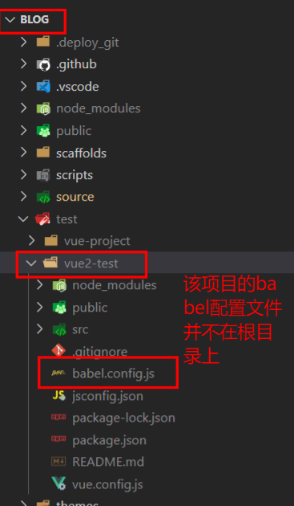
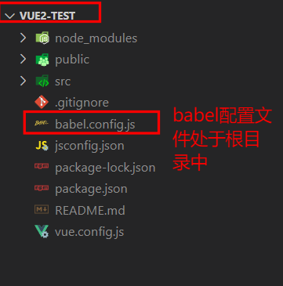

报错合集
vue项目
eslint报错： No Babel config file detected xxx
报错原因：解析babel需要使用到babel配置文件（babel.config.js），由于在根目录下找不到配置文件,所以会报错（babel配置文件默认需要放在根目录下才不会报错）

解决：在package.json新增parserOptions属性
1 | "parserOptions": { |
虽然不报错，但是会导致问题：配置requireConfigFile:false，本质上是告诉eslint不用在查找这个配置文件了，也就是说在babel配置文件里写的东西都失效。
解决方法：把需要运行的项目作为根目录用编辑器打开，babel配置文件处于根目录中，自然就解决了

Component name “About” should always be multi-word
报错原因：exlint语法检查（vue/multi-word-component-names）：组件命名必须使用驼峰命名或多单词命名
解决方法：在package.json设置eslint规则（rule）关闭vue/multi-word-component-names
1 | "eslintConfig": { |
TypeScript intellisense is disabled on template.
报错原因：vscoede插件的问题。
TypeScript intellisense is disabled on template. To enable, configure "jsx": "preserve" in the "compilerOptions" property of tsconfig or jsconfig. To disable this prompt instead, configure "experimentalDisableTemplateSupport": true in "vueCompilerOptions" property.
有道翻译：TypeScript智能感知在模板上被禁用。要启用，请在tsconfig或jsconfig的”compilerOptions”属性中配置”jsx”:”preserve”。要禁用此提示，请配置”experimentalDisableTemplateSupport”: true ‘ in ‘ “vueCompilerOptions” ‘属性。
解决方法：按照提示在jsconfig(在package.json文件配置)配置”jsx”: “preserve”
package.json
1 | "compilerOptions": { |